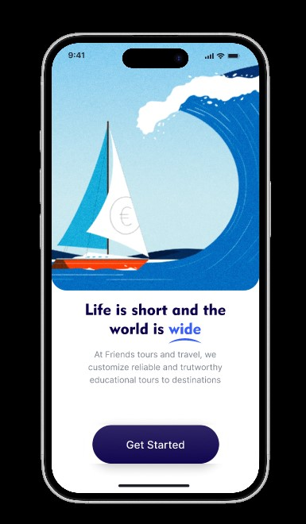
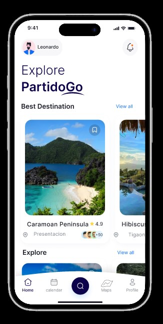
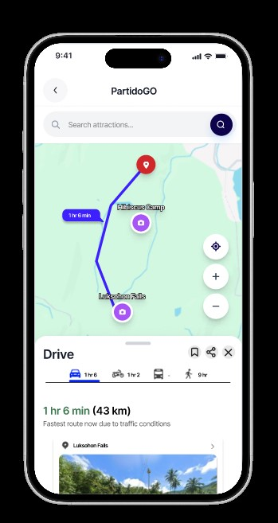
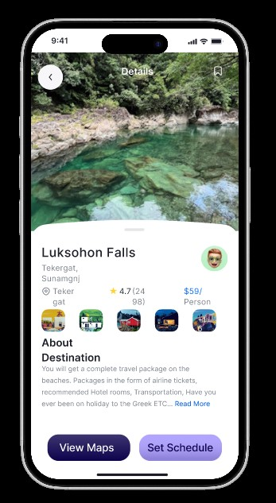
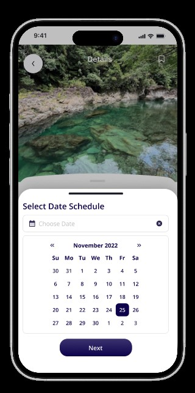
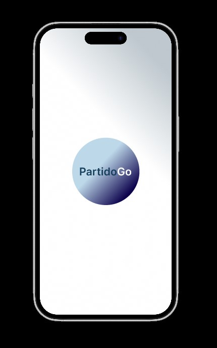
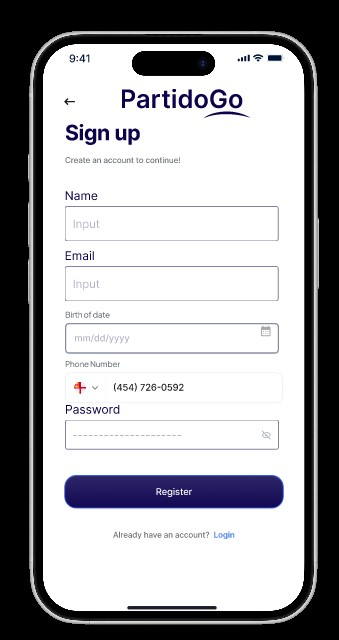
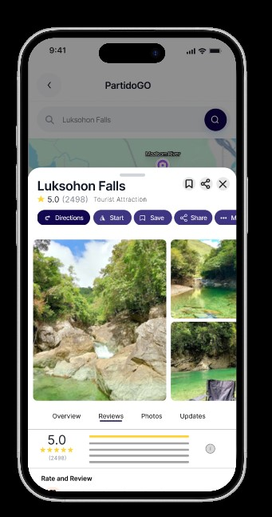
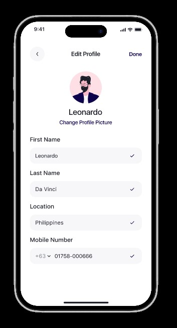

A screen-by-screen tour of the PartidoGO Figma prototype — exploring each feature, user flow, and key interface decisions.
Key facts about the PartidoGO prototype used during the usability evaluation.
PartidoGO is a mobile application prototype built on Figma. It targets local travelers and tourists visiting the Partido region of Bicol, providing them with an interactive map, resort listings, and a booking system.
The prototype was developed by Group 7 as part of the BSIT 3B Human-Computer Interaction course and served as the evaluation subject for their usability study.
Access the interactive Figma prototype directly in your browser.
Open in Figma ↗Each major step in the prototype experience, annotated with evaluation observations.
Users are greeted by the PartidoGO splash screen upon launch. The onboarding flow introduces the app's core value proposition across three swipeable cards, followed by prompts to register or log in.

New users complete a short registration form (name, email, password). Returning users access the login screen with email and password fields. Social login options are visible but not yet functional in v1.0.
After login, users land on the home dashboard which displays featured destinations, a search bar, and quick-access category tiles. A bottom navigation bar provides access to Map, Search, Bookings, and Profile sections.

The map screen renders a stylized map of the Partido region with pinned resort and tourist spot markers. Tapping a pin reveals a quick-info card with rating, distance, and a "View Details" button.

The detail page shows a photo gallery, description, amenities list, user reviews, operating hours, and location. A sticky "Book Now" CTA button remains visible as the user scrolls.

Users select dates, group size, and any add-ons before reaching the payment summary screen. A confirmation screen with booking reference number is shown upon completion.

All prototype screens used during the evaluation, presented as a visual reference.

App launch & brand intro
Feature introduction slides
Email & password login

New user sign-up form
Featured spots & search
Region map with pins

Filtered listing view
Gallery, info & reviews
Calendar & guest picker

Account & booking history
The key features implemented in the PartidoGO prototype and their usability evaluation status.
Pin-based tourist spot discovery
Category, price & rating filters
Resort & attraction detail pages
Date selection & reservation flow
Ratings & traveler feedback
Account management & history
As this is a v1.0 hi-fidelity Figma prototype, the following limitations were noted prior to evaluation and should not be counted as usability failures:
Interact with the live Figma prototype directly from this page.